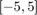
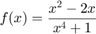
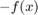
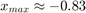
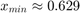
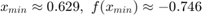
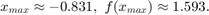

Minima och maxima vid punkterna  för funktionen

x = linspace(-5, 5, 1000); x1 = -5; x2 = 5; y = @(x) (x.^2 - 2*x) ./ (x.^4 + 1); x_min = fminbnd(@(x) y(x), x1, x2); x_max = fminbnd(@(x) -y(x), x1, x2); figure; plot(x, y(x)); hold on; xlabel('x'); ylabel('y'); grid on; plot(x_min, y(x_min), 'ro', 'MarkerSize', 3, 'MarkerFaceColor', 'r'); plot(x_max, y(x_max), 'ro', 'MarkerSize', 3, 'MarkerFaceColor', 'r'); hold off;

Genom att använda fminbnd() så hittar vi minima genom att passera originala funktionen som argument. För att hitta maxima så passerar vi också funktionen som argument, men vi multiplicerar den med -1 för att hitta maxima, alltså omvandlar vi funktionen till .
Nu tittar vi närmare på vardera punkt
figure; plot(x, y(x)); hold on; xlabel('x'); ylabel('y'); grid on; plot(x_max, y(x_max), 'ro', 'MarkerSize', 3, 'MarkerFaceColor', 'r'); axis([-0.9 -0.75, 1.5 1.65]); hold off;


figure; plot(x, y(x)); hold on; xlabel('x'); ylabel('y'); grid on; plot(x_min, y(x_min), 'ro', 'MarkerSize', 3, 'MarkerFaceColor', 'r'); axis([0.55 0.7, -0.8 -0.65]); hold off;


Vi har alltså fått att

och
